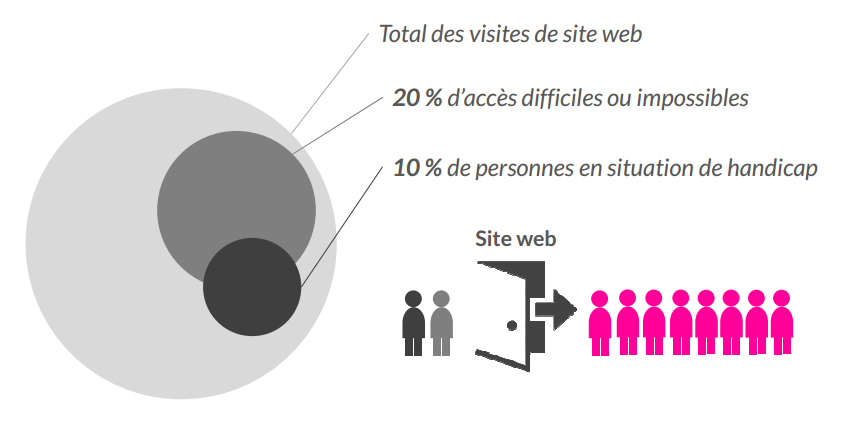
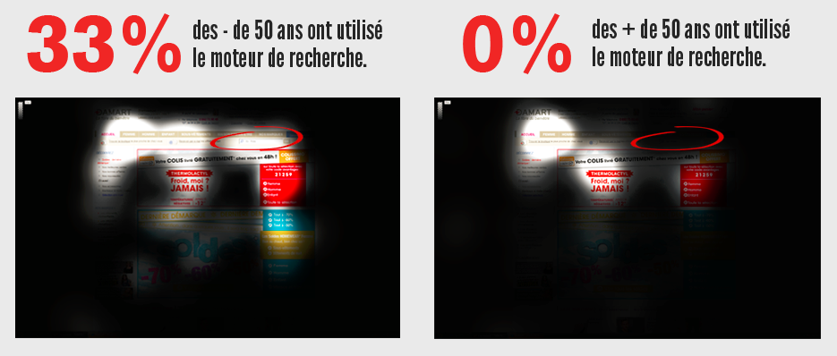

En route vers l'accessibilité
Tour d'horizon de l'accessibilité
Jonathan Pansiot @uxlco
Qu'est-ce que l'accessibilité ?
- Comment ça fonctionne ?
- Les avantages de l'accessibilité.
- Comment faire ? La mise en oeuvre.
Le Web : un objet technique
- Définition : objet dont la finalité est d'assurer un caractère pratique, utilitaire pour l'homme.
- Partage de la connaissance, acquisition du savoir.
Langages du web.
Les standards du web sont les langages du web. L'accessibilité est la grammaire formelle du web dans son ensemble mais aussi à travers ses outils et ses interactions.
Notion de normalité versus notion de handicap
Ne pas faire de sites pour les personnes en situation de handicap mais faire des sites pour les gens tout simplement.

Les régles (de grammaire)
"Que nul n'entre s'il n'est grammairien."
Trois référentiels :
- Web Content (WCAG) pour les contenus ;
- Authoring Tool (ATAG) pour les outils comme les cms ;
- User Agent (UAAG) pour les navigateurs.
La liberté
Donner à tous des clefs pour comprendre et critiquer le monde.
« Les handicapés, on s’en fout, le site ne leur est pas destiné. »
« La démocratie, c'est chiant. c'est le fascisme qui est naturel. » Franck Lepage
- Qu'est-ce que l'accessibilité ?
Comment ça fonctionne ?
- Les avantages de l'accessibilité.
- Comment faire ? La mise en oeuvre.
Que dit la loi ?
- Un droit universel selon l'article 9 de la "Convention relative aux droits des personnes handicapées" adoptée en 2006 par l'Organisation des Nations Unies.
- France : Loi du 11 février 2005 dite loi « handicap. »
- Ailleurs : http://www.telono.com/fr/services/accessibilite/directives.
Quatres principes :
- Perceptible ;
- Utilisable ;
- Compréhensible ;
- Robuste.
Des référentiels d'application :
- Rgaa ;
- Accessiweb.
Les sites concernés :
- Tous ;
- Les sites publics (loi de 2005) ;
- Les pages de recrutement des sites privés ;
- Les intranets des entreprises ;
- Les sites internationaux : les lois peuvent être plus sévères.
- Qu'est-ce que l'accessibilité ?
- Comment ça fonctionne ?
Les avantages de l'accessibilité.
- Comment faire ? La mise en oeuvre.
Attention
Les gains de l'accessibilité d'un point de vue purement financier sont difficiles à démontrer, mais l'élaboration d'un site est loin de se résumer au seul aspect lucratif.
« Nous sommes à l'ère barbare des idées. »
Edgar Morin

Complexité
Un site est un objet complexe où interviennent plusieurs disciplines, expertises et métiers. L'accessibilité est une discipline complexe qui doit les influencer.

Élargir votre audience
- 650 millions de personnes en situation de handicap dans le monde ;
- 100 millions en Europe ;
- 20 % des internautes rencontrent des difficultés sur le web;
- « Silver Tsunami » vieillissement de la population occidentale ;
- Pouvoir d'achat de 300 milliards : (personnes âgées et personnes en situation de handicap)
- Facebook : plus de 10% des utilisateurs augmentent la taille du texte.
Aide à l'ergonomie
- Un des 4 principes concerne l'utilisabilité.
- Des éléments obligatoires (liens d'évitement, présence de deux niveaux de navigation par page).
- Navigation au clavier (outline, pas de piège au clavier).
- Wai-Aria et les design pattern : Mise en oeuvre des principes de navigation des applications.

Faciliter le référencement naturel
- Title des pages ;
- Hierarchie des titres ;
- Alternative des medias ;
- Sous-titrages.

Indicateur de qualité et réduction des risques
- Un cadre rigoureux : 305 tests chez AccessiWeb et 187 tests pour le RGAA ;
- Présence très importante de l'accessibilité dans la qualité web : Opquast ;
- Maintenabilité : Certains critères sont des indications des risques à éviter (exemple : critère images, alternative au javascript, erreurs formulaire.)
Améliorer l’image de marque
- Responsabilité sociétale des entreprises ;
- L’augmentation des critères positifs grâce à des clients satisfaits ;
- Labellisation Accessiweb et nombreux prix : Technologie4Good, OCIRP ...
Éviter les litiges juridiques
- Les coûts peuvent parfois devenir très importants en cas de "class action" ;
- Conséquences sur l’image de l’entreprise.
Accessibilité comme moteur de l’innovation
- Hiérarchisation des sites :
Un site en flash avec de la musique < Un site Web ouvert et standard sans flash < Un site responsive < Un site avec une expérience utilisateur impressionnante (le contenu, le design, les interactions etc ... ) < Tous les critères précédents, l'accessibilité en plus. - Les critères sont des pistes d’innovation.
- Maitrise des contenus "content-first", faciliter la création de sites mobiles, applicatifs ...
Tester votre prestataire.
Un audit est l'occasion de savoir si votre prestation a été faite correctement.
- Qu'est-ce que l'accessibilité ?
- Comment ça fonctionne ?
- Les avantages de l'accessibilité.
Comment faire ? La mise en oeuvre.
Des outils et des rapports
- Réalisation d'audits ;
- Les tests automatisés : Tanaguru, Opquast.
Les process de production
- Planifier l'accessibilité dans l'ensemble de la chaine de production. De la conception à la production et même après la mise en exploitation ;
- Cycle en V : prévoir en amont et réaliser de petits audits à chaque étape de validation ;
- Agile : Profiter des itérations, tester les fonctionnalités.

Un combat à ne pas mener seul
- Une communauté ouverte et passionnée (une liste des experts français sur twitter : @villainjp, @goetsu, @romaingervois, @oliviernourry, @sebcbien, @armonyaltinier, @johanramon, @mfaure.)
- Sensibiliser les acteurs ;
- Se faire aider par sa direction.
Formez vous !
Merci
Des questions ?
This is not the end
Vous pouvez télécharger le livre blanc d'alterway : en route vers l'accessibilité.